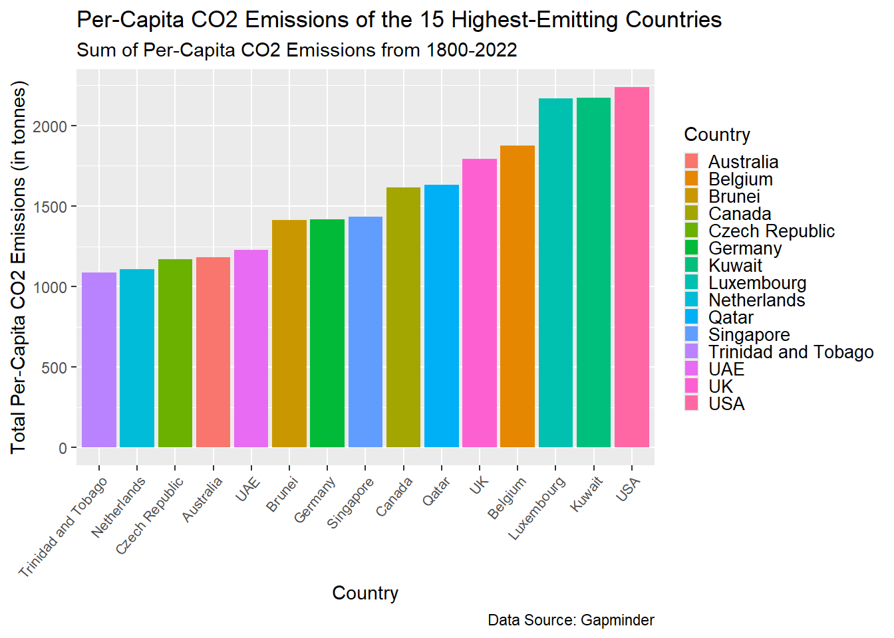
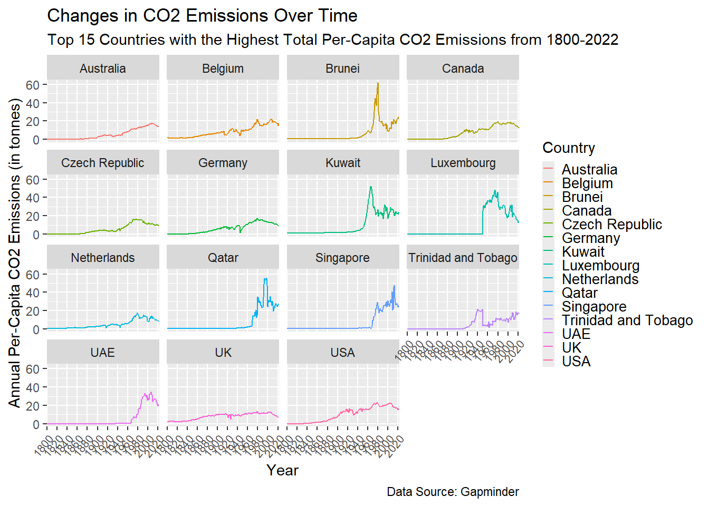
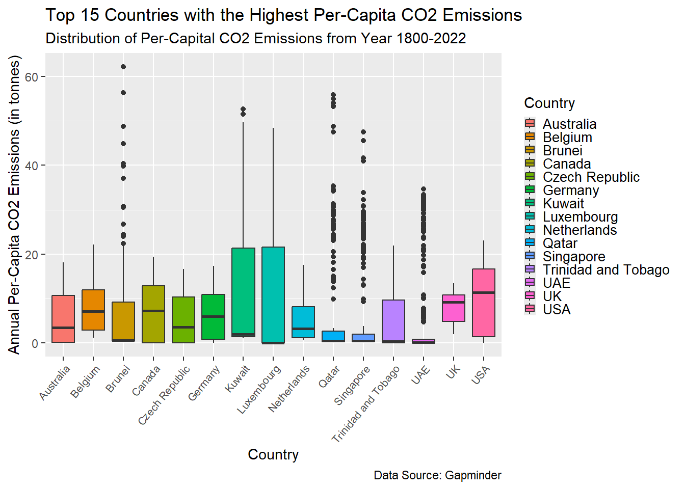

Which countries have had the highest CO2 Emissions Per-Capita over time (last 222 years), and how have CO2 emissions in these countries changed over time?
Intended Audience
The intended audience of this analysis is policymakers, world leaders, climate change activists, researchers, and anyone interested in understanding and reducing CO2 emissions.
Dataset
This data comes from the Gapminder dataset (linked here). Gapminder has widely available data about global trends and proportions. I used the CO2 Emissions per Capita dataset within the Gapminder data.
Note
This data includes CO2 emissions per-capita. This means that countries with smaller populations may have higher CO2 emissions per-capita, but lower CO2 emissions overall.
Data Dictionary
Variable Name
Class
Description
Country
character
Name of country of CO2 emission reading
Year
character
Year that CO2 emission reading was taken
CO2_Emissions
double
Annual per-capita CO2 emissions
*This data dictionary is for the modified (data wrangled) dataset. The original dataset included the country variable, but listed each year as its own double variable. This double variable represented the per-capita CO2 emission reading.
Analysis
library(dplyr)
Attaching package: 'dplyr'
The following objects are masked from 'package:stats':
filter, lag
The following objects are masked from 'package:base':
intersect, setdiff, setequal, union
Warning: There were 7 warnings in `mutate()`.
The first warning was:
ℹ In argument: `X2003 = as.numeric(X2003)`.
Caused by warning:
! NAs introduced by coercion
ℹ Run `dplyr::last_dplyr_warnings()` to see the 6 remaining warnings.
# A tibble: 6 × 2
country tot_CO2
<chr> <dbl>
1 USA 2237.
2 Kuwait 2175.
3 Luxembourg 2167.
4 Belgium 1874.
5 UK 1795.
6 Qatar 1632.
ggplot(co2_total, aes(x =reorder(country, tot_CO2), y = tot_CO2, fill = country)) +geom_bar(stat ="identity") +theme(axis.text.x =element_text(angle =50, hjust =1, size =8), legend.text =element_text(size =10), legend.key.size =unit(3, 'mm')) +xlab("Country") +ylab("Total Per-Capita CO2 Emissions (in tonnes)") +labs(title ="Per-Capita CO2 Emissions of the 15 Highest-Emitting Countries", subtitle ="Sum of Per-Capita CO2 Emissions from 1800-2022", caption ="Data Source: Gapminder") +guides(fill=guide_legend(title="Country"))

Interpretation
At nearly 2250 tonnes of CO2 emissions per-capita, the USA has had the highest per-capita CO2 emissions since 1800. This is over twice the per-capita CO2 emissions as the country with the 15th highest CO2 Emissions, Trinidad and Tobago.
*Total Per-Capita CO2 Emissions is calculated as the sum of annual per-capita CO2 emissions from 1800-2022.
top15_countries <- co2_total$countryco2_data_top15 <- co2_data %>%filter(country %in% top15_countries)ggplot(co2_data_top15, aes(x = Year, y = CO2_Emissions, group = country, color = country)) +facet_wrap(~country) +geom_line() +theme(axis.text.x =element_text(angle =50, hjust =1, size =8), legend.text =element_text(size =10), legend.key.size =unit(3, 'mm')) +scale_x_discrete(breaks =seq(1800, 2030, by =20)) +xlab("Year") +ylab("Annual Per-Capita CO2 Emissions (in tonnes)") +guides(color=guide_legend(title="Country")) +labs(title ="Changes in CO2 Emissions Over Time", subtitle ="Top 15 Countries with the Highest Total Per-Capita CO2 Emissions from 1800-2022", caption ="Data Source: Gapminder")

Interpretation
Some countries, like the UK, US, and Australia, have steadily increasing annual CO2 emissions per-capita, while others have low CO2 emissions followed by large spikes in their CO2 emissions, like Brunei, Kuwait, and Qatar.
ggplot(co2_data_top15, aes(x = country, y = CO2_Emissions, fill = country)) +geom_boxplot() +theme(axis.text.x =element_text(angle =50, hjust =1, size =8), legend.text =element_text(size =10), legend.key.size =unit(3, 'mm')) +xlab("Country") +ylab("Annual Per-Capita CO2 Emissions (in tonnes)") +labs(title ="Top 15 Countries with the Highest Per-Capita CO2 Emissions", subtitle ="Distribution of Per-Capital CO2 Emissions from Year 1800-2022", caption ="Data Source: Gapminder") +guides(fill=guide_legend(title="Country"))

Interpretation
This shows that some countries (like the USA, Australia, Canada, and the Netherlands) have relatively consistent levels of annual per-capita CO2 emissions. Others, like Qatar, Singapore, and the UAE, have mostly low levels of annual per-capita CO2 emissions, with a few large (high-emissions) outliers.
Summary
As we see in our figures, the USA, Kuwait, Luxembourg, Belgium, and the UK have had the highest total per-capita CO2 emissions since 1800. Among the top 15 countries with the highest total per-capita CO2 emissions, the distributions of these emissions over time vary. Countries like the USA, Belgium, Australia, and the UK have had relatively consistent, slowly growing per-capita emissions, while others like Kuwait, Brunei, Qatar, and Luxembourg show very low per-capita emissions until a spike (and thus some very high outlier years) in recent times. Further investigation may examine the causes of these spikes in order to reduce emissions and prevent them from occurring again. A limitation of this analysis is that it analyzes per-capita CO2 emissions; countries with lower per-capita emissions but higher populations may be contributing more to worldwide CO2 emissions than those listed in this analysis. Still, this analysis is helpful in identifying which countries are disproportionately contributing to global CO2 emissions. Further study of these countries may determine and identify actions in these countries that may prove beneficial.